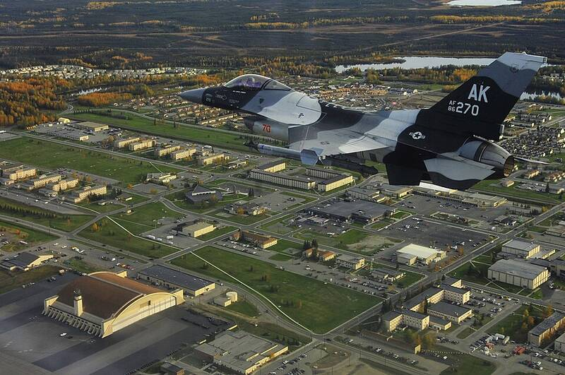

Eielson AFB Alaska Alaska · Military base · 64.665°N, 147.089°W An 18th Aggressor Squadron F-16 over Eielson, 2009. Photo: U.S. Air Force, Public domain (source) F-35 base near Fairbanks. 1 Open in the interactive Watcher Sources Eielson Air Force Base Wikipedia